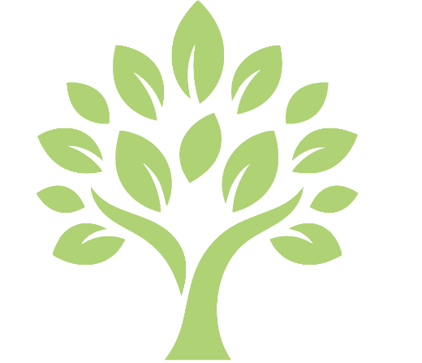
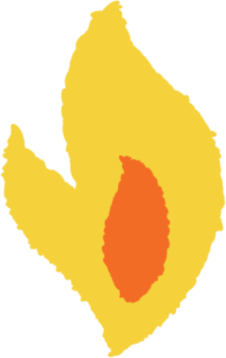
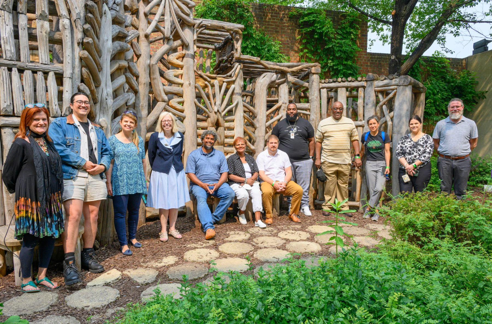
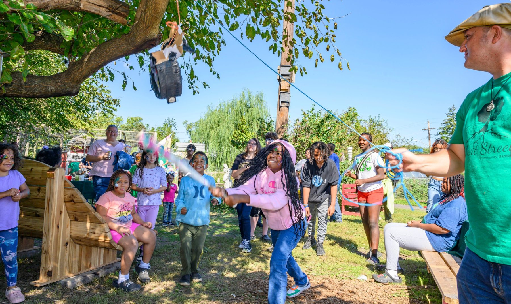
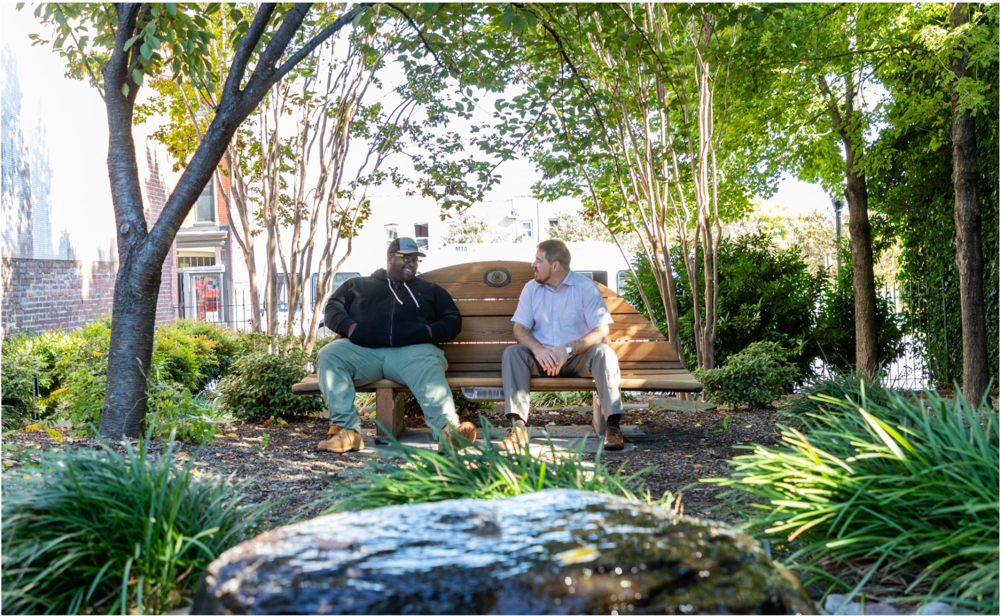

{{ card.graphicEl }}
{{ card.when }}
{{ card.title }}
{{ card.body }}


Thirty years of listening taught us what matters most.
In 1996, Nature Sacred's co-founders, Kitty and Tom Stoner, set out to reconnect people with nature through community-led greenspaces. Roughly two decades into that work, we revisited 40 of the 100 Sacred Places we'd helped create up to that point finding that the ones that thrived shared two things: a devoted local caretaker—a Firesoul™—and a culture of belonging, built through steady invitations back into the space. Those two insights became the foundation of the Nature Sacred Firesoul Network.
{{ card.body }}
We call them Firesouls, for the spark they carry into this work.
Firesouls are the stewards of Sacred Places, and none of them are on our staff. They are nonprofit leaders, educators, nurses, faith leaders, parks staff, artists, organizers, and volunteers. What unites them isn't a job title. It's a sense of responsibility for one particular piece of ground, and for the people it belongs to.
What they do is different from maintenance. They invite people in. They notice who hasn't come yet. They make sure each new generation feels welcomed. And because every Firesoul and every Sacred Place is different, there is no single model for stewardship. And this is one of the network's greatest strengths.
Firesouls now form the national Nature Sacred Firesoul Network, first launched in 2018.
The long-term vitality of Sacred Places takes two kinds of support, so we built a Network to do both. We stand beside the Firesoul, connecting them to others doing the same work and giving them what they need to keep going. And we help them activate and open the place up, so the community feels it's theirs.

Peer connection, funding offered on trust, and people who know the work—so no one holds a place together alone.

Festivals, programs, and ordinary afternoons—the steady invitations that tell a neighborhood the place is theirs.

Learning Journeys and gatherings where Firesouls walk each other’s places and trade what actually works—the habit that keeps a Sacred Place alive for decades.
Sacred Places are local. The knowledge that keeps them going doesn’t have to be. We go deep in one place, and we connect across many. That relationship—within a community and between communities—is the Firesoul Network.
A Firesoul in Baltimore learns from a Firesoul in Alabama. What works in a hospital courtyard travels to a schoolyard three states away. We bring Firesouls together—at gatherings, on calls, in each other’s places—to share what they know, trade what works, and carry each other’s load.
A directory of Sacred Places across the country, and the Firesouls who tend them.
Our design process begins with deep listening—and design becomes community building.
Stand with the people who stay. Join the movement, and help sustain a Sacred Place for as long as it stands.